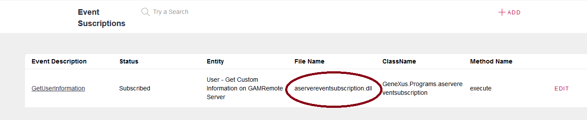
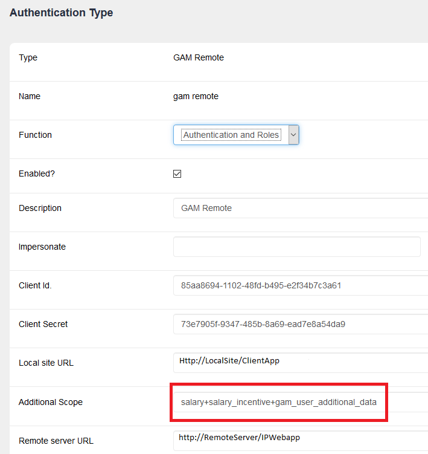
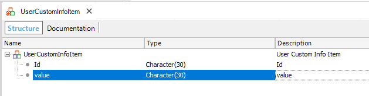
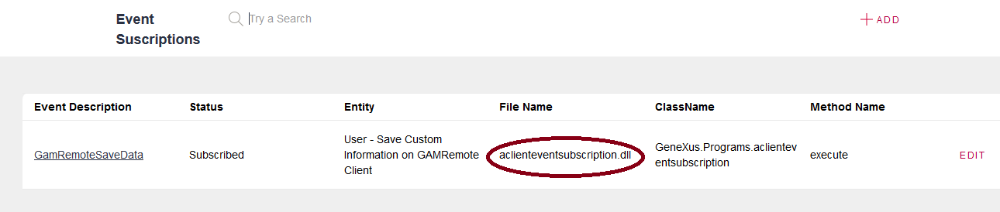

When using GAM Remote Authentication Type, sometimes it may be necessary to retrieve additional information about the user from the Identity Provider. For example, after the user logs in, retrieve his place of work, or his salary. This information belongs to the Identity Provider and may have to be transferred to the client after login. The so-called dynamic attributes of a user (or extended attributes) are managed through the "gam_user_additional_data" scope as explained here. Nevertheless, in some scenarios, it may be necessary to transfer to the client other information besides the extended attributes of the user. ImplementationThe information you want to pass from the Identity Provider to the Client is loaded using a procedure (named for example "servereventsubscription").  The procedure must have a specific interface: parm(in:&EventName,in:&JsonIn,out:&JsonOut); where EventName: Belongs to the GAMEvents Domain. ExampleConsider a scenario where the Client application of a GAM Identity Provider needs to get the salary and the salary incentive of the user who logs into the Identity Provider. So, in the Client configuration, we need to add the necessary Additional Scopes to the Remote Authentication Type defined. In this case, we add the salary and salary_incentive scopes, separated by '+'. Note that all the other scopes that need to be added are separated by '+' (such as the gam_user_additional_data, if it's needed).  First, we need to program a procedure which runs in the Identity Provider's and gets the information you're interested in, assuming that the GAMUser logged in can be obtained from the GAMSession received as a string parameter in JSON format. The Scopes are also obtained from the GAMSession received. There you have a string where each scope is separated by '+'. You have to parse this string to search for the scope you are expecting to receive. In the following example, note that we search for the "salary" and "salary incentive" scopes. If those scopes aren't received, the procedure returns an empty string. So the code is as follows:
parm(in:&EventName,in:&JsonIn,out:&JsonOut);
&GAMSession.FromJsonString(&jsonIN) //Get the GAMSession from the in parameter.
&UserGUID = &GAMSession.User.GUID //Get the GAMUser from the GAMSession obtained previously.
&Scopes = &GAMSession.Scope.SplitRegEx(!"\+") //Read the scopes from the GAMSession.
&i = 1
Do while &i <= &Scopes.Count
&ScopeReceived = &Scopes.Item(&i)
If &ScopeReceived = !"salary"
do "GetSalary"
else
if &ScopeReceived = !"salary_incentive"
do "GetSalaryIncentive"
endif
endif
&i = &i + 1
EndDo
&jsonOUT = &SDT_UserCustomInfo.ToJson()
//Search for the salary of the user.
sub "GetSalary"
for each Users
where UserGUID = &UserGUID
&SDT_UserCustomInfoItem = new()
&SDT_UserCustomInfoItem.Id = "salary"
&SDT_UserCustomInfoItem.Value = userSalary.ToString()
&SDT_UserCustomInfo.Add(&SDT_UserCustomInfoItem)
endfor
endsub
sub "GetSalaryIncentive"
for each Users
where UserGUID = &UserGUID
&SDT_UserCustomInfoItem = new()
&SDT_UserCustomInfoItem.Id = "salary_incentive"
&SDT_UserCustomInfoItem.Value = userSalaryIncentive.ToString()
&SDT_UserCustomInfo.Add(&SDT_UserCustomInfoItem)
endfor
endsub
As stated above, the output is free format, so we've defined the following SDT (named UserCustomInfoItem) to store the information that we need to retrieve.  In this example, the string returned for a given user, could be the following : [{"Value":"1000000","Id":"salary"},{"Value":"1000","Id":"salary_incentive"}] How to retrieve the information in the client?In the Client, we subscribe to the User_SaveCustomInfo event, which triggers automatically after the login. In this example, the procedure is called "clienteventsubscription".  In the procedure subscribed to that event, we should program all the steps we need to execute using the information returned from the Identity Provider (in our example, the salary and the salary incentive). The interface of the procedure is always as follows: Parm(in:&EventName, in:&jsonIN, out:&jsonout); where EventName: Belongs to the GAMEvents Domain. The code of the example is the following: &SDT_UserCustomInfo.FromJson(&JsonIn) // SDT_UserCustomInfo is based on the UserCustomInfoItem SDT. for &SDT_UserCustomInfoItem in &SDT_UserCustomInfo //Save the data: &SDT_UserCustomInfoItem.id //Save the data: &SDT_UserCustomInfoItem .value endfor ConclusionThe solution consists of using GAM Events subscription and specifying the correct Additional Scope in the Client configuration. |
| Backlinks |
| GAM Events subscription |